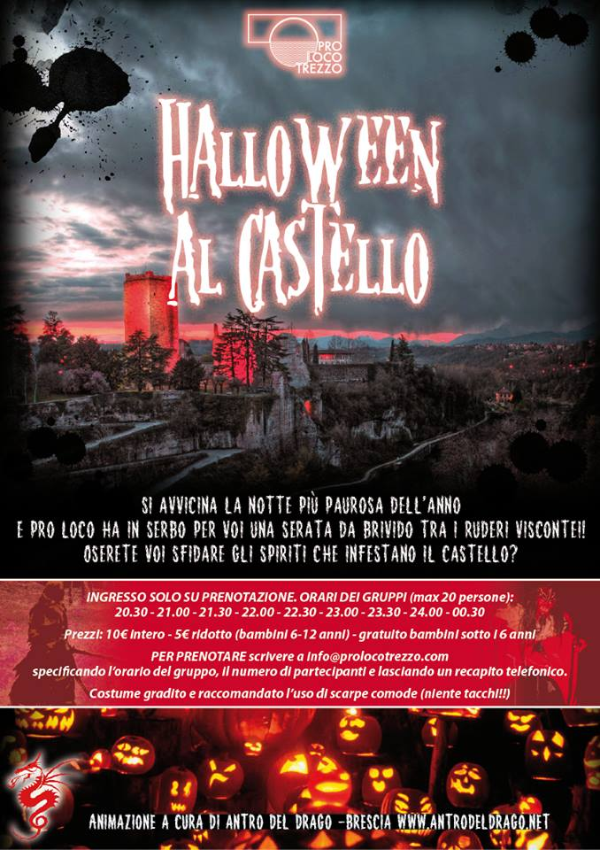
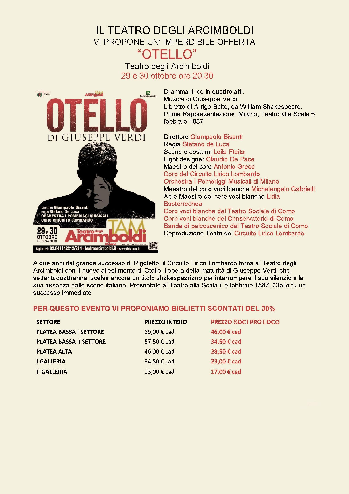
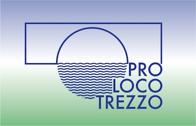

Eventi
-

31/10/2013 • 20:30 - 00:30 » Halloween al Castello
dove: Castello Visconteo, Trezzo Sull'Adda, MI
Si avvicina la Notte più paurosa dell'Anno e Pro Loco ha in serbo per Voi una serata da Brivido tra i Rudeli Vistonei! Oserete Voi sfidare gli spiriti che infestano il Castello?
{kind=link}
Visite Guidate
Scopri le bellezze, la storia e il territorio di Trezzo sull'Adda grazie alle nostre proposte di visite guidate.
| Visita | Quando | Prezzo |
|---|---|---|
|
Il Castello Visconteo La visita comprende la ricostruzione della tomba longobarda, i sotterranei, i resti del ponte e la salita alla torre. Durata: ~1 ora e mezza |
Periodo: Marzo - Ottobre Giorni: Ogni domenica pomeriggio e festivi, senza prenotazione Orari: Partenza ore 15.00 e 17.00 Visite guidate per gruppi e scolaresche (max 25 persone), su prenotazione tutto l’anno, anche in notturna |
Intero: €6,00 - Ridotto (6-12 anni): €3,00 - Gratuito sotto i 6 anni Gruppi: Adulti: €60,00 Scolaresche e Over 65: €45,00 |
|
La Centrale Idroelettrica Taccani Durata: ~ |
Periodo: Giorni: Su prenotazione Martedì, Mercoledì e Giovedì, senza prenotazione in occasione di aperture straordinarie della Centrale per eventi e manifestazioni. Orari: |
Visita gratuita offerta da ENEL Gruppi: |
|
Il nostro Territorio Visite guidate al territorio (promontorio di Trezzo, centro storico, Crespi d’Adda) Durata: ~ |
Periodo: Giorni: Tutto l'anno su prenotazione per gruppi Orari: |
Gruppi: |
Agevolazioni
-

29 e 30 Ottobre • 20:30 » Otello di Giuseppe Verdi
dove: Teatro degli Arcimboldi Milano
Grazie alla convenzione con i teatri Arcimboldi e Dal Verme, la Pro Loco Trezzo offre ai propri soci la possibilità di andare a teatro a prezzo scontato, previa presentazione all'ingresso della tessera associativa.
{kind=link}
Tesseramento
Aiutaci e sostienici nelle nostre attività e manifestazioni!
La quota associativa è di €10,00
Tesseramento aperto durante le nostre iniziative o in sede previo appuntamento
Contatti
Per informazioni e prenotazioni sulle nostre iniziative e i nostri percorsi:
sede: via Valverde 33, all'ingresso del Castello
e-mail: info@prolocotrezzo.com
cell: 345 9132210 pomeriggio (chiamare solo ed esclusivamente per info visite guidate o eventi)
tel/fax: 02 9092569 (lasciare un recapito in segreteria)